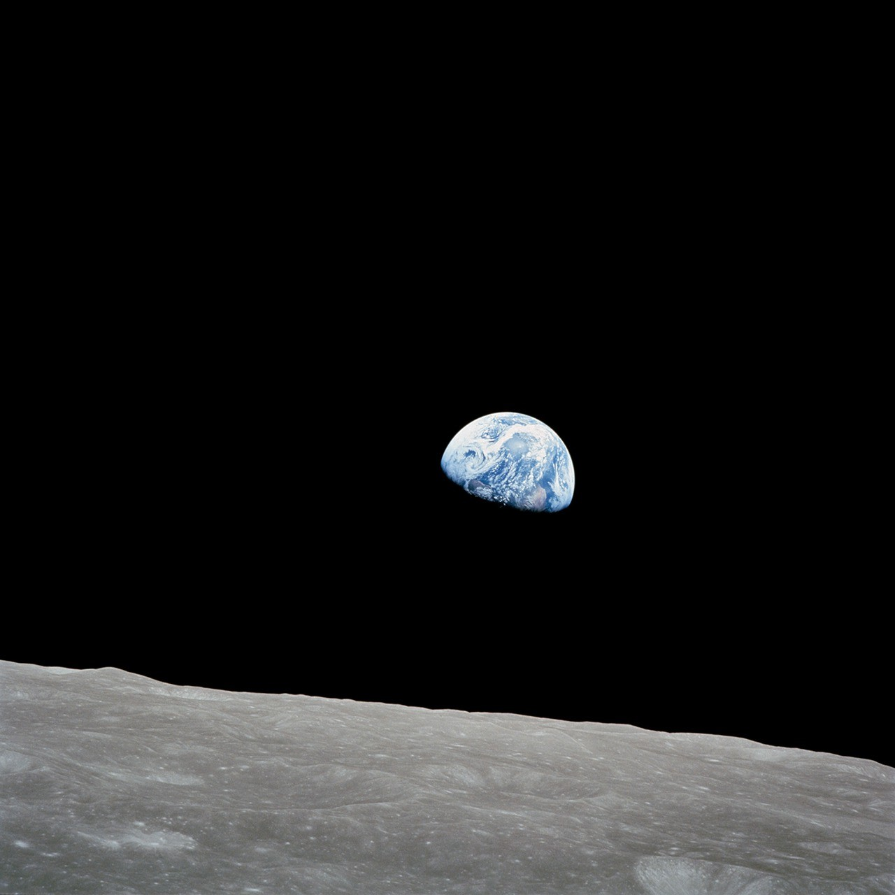

A NEW PERSPECTIVE ON SPACEFLIGHTEXPLORATION SERIES / VOL. 01
Curiosity is your launchpad.
Make space
for discovery.
You don't need to leave Earth to change your perspective. Take the controls. Test an idea. See where it takes you.
Begin your missionYOUR NEXT DESTINATIONThe Moon. And a new way to think.
Explore the missions ↓IMAGE: NASA / BILL ANDERS01 / THE MISSION COLLECTIONTHREE WAYS TO GET CURIOUS
Small burns.
Big discoveries.
Space doesn't move the way you expect.
Three hands-on missions to find out why.
02 / THE FLIGHT LAB LOCAL SIMULATION
Your idea.
Your trajectory.
A little intuition. A little physics.
A whole new perspective.
OL — FLIGHT CONTROL
WASD or arrow keys to thrust SPACE to pausePredict → Experiment → Compare → Understand
03 / BEHIND THE FLIGHTBIG QUESTIONS. CLEARER ANSWERS.
RETHINK THE FAMILIARSpace changes
Space changes
your perspective.
Physics explains why.
We bring our Earthbound intuition into space. Sometimes, it needs a course correction.
04 / A CAPSTONE WITH CURIOSITY
Built to make
the “aha” happen.
Orbital Lab explores a simple idea: learning can begin with a prediction, and deepen when you see the path you didn't take.
Discover it for yourself01
Predict before you pilot.
Your answer gives the flight a question to investigate.
02
Make the physics visible.
Velocity, thrust, gravity. See the difference in motion.
03
Change one decision.
A second simulation starts from the same initial state.
INDEPENDENT EDUCATIONAL PROTOTYPEMADE FOR THE NEXT QUESTION.